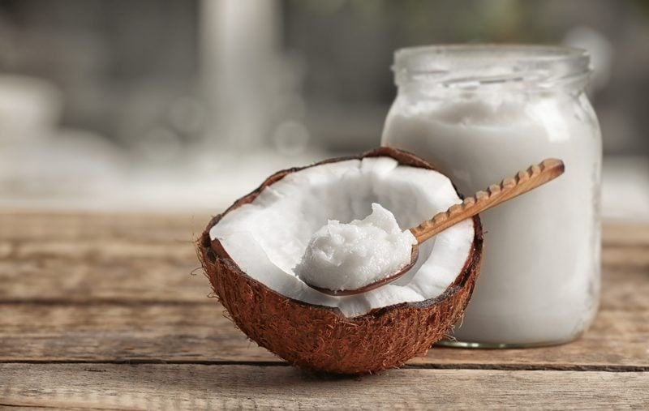

Coconut Oil vs. Coconut Butter
Throughout the years of my recipe blogging, I have come to notice that there is some confusion about the difference between coconut oil and coconut butter. So I thought I would write a little explanation about each and put the confusion to rest.

Coconut Oil vrs Coconut Butter
Coconut oil is JUST the oil that is extracted from the meat. Coconut butter is the whole meat of the coconut pureed into a creamy butter. And just a little FYI, coconut meat (by nature) is approximately 65% oil.
That was the boy version of explanation… now here’s the girl version… (my husband and I always joke about which version of the story that we share with one another. Boy version is explained in the least amount of words. Girl version goes into great detail… always getting then you needed, wanted, or expected. lol
Coconut Butter
Raw Coconut Butter is a whole food, not just oil. It melts in your mouth with a full coconut flavor and aroma, while giving you whole coconut nutrition: oil, dietary fiber, protein, vitamins, and minerals. No additives—only pure, unadulterated coconut.
How to Enjoy Coconut Butter
It is wonderful added to smoothies, fruit salads, sauces, salad dressings, and baked goods. Use it as a hard shell topping for ice cream (once poured onto cold ice cream, it creates a shell), mix with cacao nibs or fruit to create your own dessert sensations, or eat it right out of the jar. Delectable! Us as an icing on scones, cookies and more. Just drizzle melted coconut butter on top, chill it and it becomes dry to the touch.
When you first get home with your coconut butter, it might look as though it separated (you will see perhaps an off-white color on the bottom with a white layer on top). This is normal. This just indicates that the oil was separating from the butter. Raw Coconut Butter is soft at above 80 degrees (F) and solid at lower temperatures. You can soften it by putting the jar in a bowl of warm water and once soft enough, stir well for a creamy, smooth texture. Another way to soften it is placing the open jar in a food dehydrator, warm at 115 degrees (F) until soft. After 15 minutes, stir the butter, and then put back in for another 15 minutes, then mix well before serving.
Why is it referred to as butter?
Basically, because it has more in common with nut butters than coconut oil since it is made from the whole flesh of the coconut. Sometimes it is referred to as coconut cream or manna, so if you are ever in doubt as to why I am calling for in my recipes or another chef’s recipes… be sure to ask for clarification. Be sure to look for 100% organic raw coconut butter that is made by using a low-temperature process (below 115° F.) This preserves the vital enzymes, vitamins, and proteins.
Raw Virgin Coconut Oil
Coconut oil contains absolutely no trans fats. Although many people mistakenly believe coconut oil is dangerous to health due to its saturated fat content, close to two-thirds of its saturated fat is made up of medium-chain fatty acids, which are actually health promoting and they are antimicrobial, easily digested for quick energy, and beneficial to the immune system. The body uses MCT’s as fuel rather than storing it as fat in the body.
The popular misconceptions about coconut oil can be traced to some decades-old flawed studies, some of which used hydrogenated (chemically altered, unnatural) coconut oils, and to misleading advertising campaigns generated by the edible oil industry.
The industry instead promoted polyunsaturated fats (such as canola, soybean, safflower. and corn), which easily go rancid when exposed to oxygen and produce harmful free radicals in our bodies. Coconut oil was falsely accused of leading to coronary heart disease, a myth that has been refuted by a large body of research showing that consumption of natural coconut oil is beneficial to health, including cardiovascular health.
How to Enjoy Coconut Oil
One way to enjoy it is purely for its health benefits. It is known to help promote weight loss and maintain healthy body weight. Supports thyroid function. Increases metabolism and energy. Prevents bacterial, viral, and fungal infections. Helps control diabetes and chronic fatigue. Protects against alcohol damage to the liver and rejuvenates skin and prevents wrinkles
Culinary wise, it is great added to smoothies, mixed into to raw cookies, breads, and puddings. You can soften it by putting the jar in a bowl of warm water and once soft enough, stir well for a creamy, smooth texture. Another way to soften it is placing the open jar in a food dehydrator, warm at 115 degrees (F) until soft. After 15 minutes, stir the Manna, and then put back in for another 15 minutes, then mix well before serving.
Look for coconut oil that is a virgin, cold-pressed, vitamin E rich, “biologically pure” one that is identical to unextracted oil from coconuts. Most commercial coconut oils are refined, bleached, and deodorized, and many are made from “copra,” or dried coconut meat. Some are even hydrogenated.
Substitute Coconut Oil for Coconut Butter in recipes?
The answer is not a straight yes or no. Coconut butter has a different flavor and texture than the coconut oil. As a safe rule of thumb, if you are reading a recipe and they use either coconut oil or coconut butter and you are unclear as to what they are using, email or contact that recipe designer and ask them to clarify.
© AmieSue.com